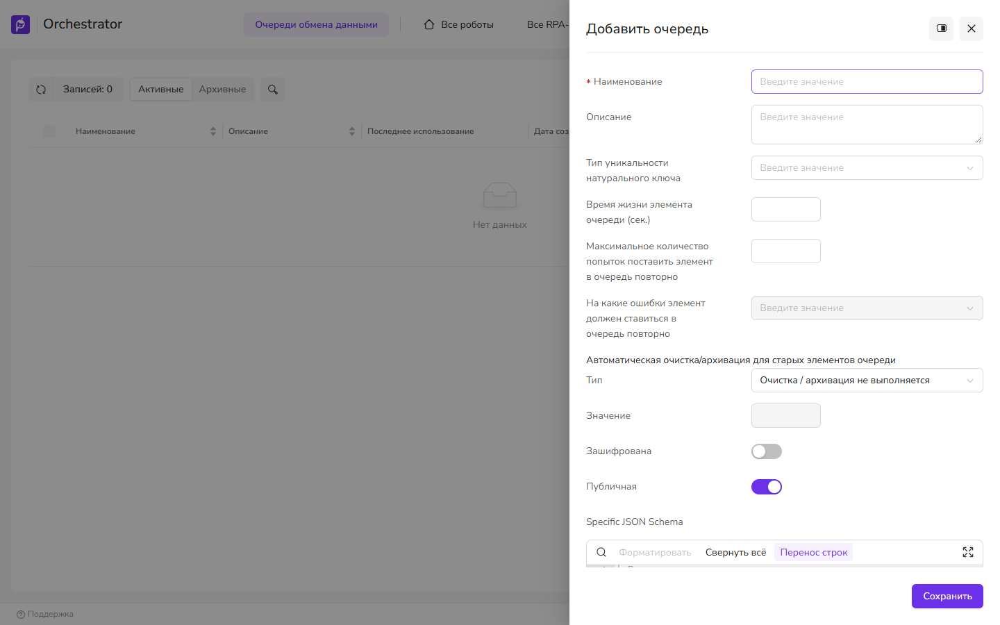
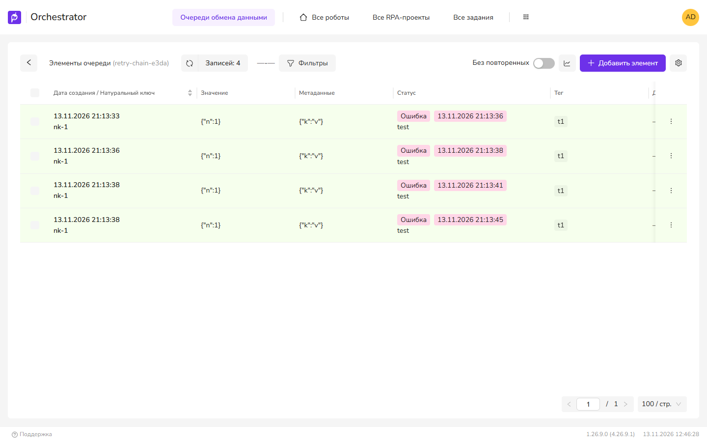

Очереди
Очереди обмена данными: создание, статусы элементов, повторы и автоочистка. Очередь проектов — другая сущность, она описана в Очередь проектов.
Где это в меню
Роботы → Очереди обмена данными. Права: ExchangeQueues.View, .Create, .Edit, .Delete; для работы с элементами — .Enqueue, .Peek, .ReadByKey, .RemoveByKey.
Создать очередь
- Нажмите Добавить очередь, укажите Наименование и Описание.
- Задайте повторы: Максимальное количество попыток поставить элемент в очередь повторно и На какие ошибки элемент должен ставиться в очередь повторно (Ошибка, Бизнес ошибка). Как работают повторы — см. Повторная постановка элементов.
- При необходимости: Время жизни элемента очереди (сек.), Таймаут для элемента очереди (сек.), Тип уникальности натурального ключа (внутри очереди или глобально), Зашифрована, Физическое удаление, Публичная, список Роботы с доступом.
- Сохранить. Очередь в списке; через Элементы очереди можно добавить элемент вручную

Статусы элементов
| В UI4 | Значение |
|---|---|
| Новое | Добавлено, ещё не извлечено роботом. |
| Выполняется | Извлечено по FIFO или прочитано с блокировкой (InProgress). |
| Выполнено / Ошибка / Бизнес ошибка | Результат обработки: Success, Error, BusinessError. |
| Повтор | Копия элемента, созданная после ошибки и ещё не извлечённая роботом. Счётчик повторов Retray: 1 — первый повтор, больше 1 — следующие. См. Повторная постановка элементов. |
| Удалено | Удалён вручную или по причине: TTL, срок (Дата недоступности (после)), таймаут. |
Эти статусы со счётчиками отображаются в списке очередей. В фильтре элементов Статусы можно выбрать несколько значений сразу: Новое, Выполнено, Ошибка, Бизнес ошибка, Выполняется.
Повторная постановка элементов
Повторы включаются в форме очереди двумя параметрами: Максимальное количество попыток поставить элемент в очередь повторно и На какие ошибки элемент должен ставиться в очередь повторно. Если задано только количество, повтор выполняется для статуса «Ошибка». Наибольшее количество — 1000.
Когда робот переводит элемент в статус «Ошибка» или «Бизнес ошибка», Оркестратор не возвращает исходный элемент в работу. Исходный элемент сохраняет итоговый статус, а в очередь добавляется новый элемент — его копия:
- идентификатор копии новый;
- значение, натуральный ключ, метаданные, теги и приоритет совпадают с исходным элементом;
- счётчик повторов на единицу больше, чем у элемента, который завершился ошибкой;
- копия не извлечена, поэтому в списке элементов отображается со статусом «Новое».
Копия создаётся, пока счётчик повторов элемента меньше заданного максимума. Пример: при максимуме 2 элемент обрабатывается не более трёх раз — исходный элемент и две копии.
Как робот получает копии
При извлечении и чтении робот указывает, какие элементы ему нужны. Отбор выполняется только по счётчику повторов:
| Значение | Какие элементы выдаются |
|---|---|
New | Счётчик повторов 0: элементы, которые ещё не завершались ошибкой. Значение по умолчанию. |
Error | Счётчик повторов 1: первая копия. |
RepeatedError | Счётчик повторов 2 и больше. |
Any | Все неизвлечённые элементы независимо от счётчика. |
Значения Error и RepeatedError — это номер повтора, а не тип ошибки. Копия после бизнес-ошибки и копия после обычной ошибки отбираются одинаково. Робот получает в элементе счётчик повторов, но не получает ссылку на исходный элемент, поэтому определить в процессе, после какой ошибки создана копия, нельзя.
Слово «новый» используется в двух значениях. Статус «Новое» в интерфейсе означает «не извлечён роботом» и относится в том числе к копиям. Значение отбора New означает «не извлечён и не является копией».
Если в очереди включены повторы, процесс должен читать копии. В активностях чтения из очереди отбор задаётся свойством «Статус» (State). При значении по умолчанию New копии роботу не выдаются и остаются в очереди без обработки. Укажите Any либо читайте копии отдельно со значениями Error и RepeatedError.
Роботы с прежним форматом отбора на сервере 1.26.9. Проверено запросами к серверу. В версии 1.26.7 запрос с одним значением отбора New и запрос без отбора возвращают только элементы со счётчиком 0. В версии 1.26.9 такие же запросы возвращают любые неизвлечённые элементы, в том числе копии; отбор применяется только к запросам в новом формате со списком значений. После обновления сервера до 1.26.9 процесс на роботе прежней версии, рассчитанный на чтение только новых элементов, начнёт получать и копии. Проверьте такие процессы перед обновлением.

Статус ошибки устанавливается один раз
Копия создаётся при каждом переводе элемента в статус ошибки. Оркестратор не проверяет, что у элемента уже есть итоговый статус. Если процесс дважды устанавливает ошибку одному элементу, в очереди появляются две копии с одинаковым счётчиком повторов. В процессе статус ошибки для элемента должен устанавливаться один раз.
Что изменилось в 1.26.9: извлечение нескольких видов сразу
При извлечении по FIFO робот передаёт список retries вместо одного значения. Варианты: New — новые, Error — первый повтор после ошибки, RepeatedError — повторные, Any — любые. Выдаётся элемент, подходящий под любой из них. Так за один вызов можно извлекать и новые, и повторные элементы.
Старый параметр retray (одно значение) в коде помечен «не используется в оркклиенте с 26.9.21». Робот, который передаёт отбор в прежнем формате или не передаёт его совсем, в версии 1.26.9 получает элементы без учёта счётчика повторов — см. предупреждение ниже. Чтение по фильтру тоже принимает список статусов (EventTypes вместо устаревшего EventType).
Автоочистка и архивация
В форме очереди — Автоматическая очистка/архивация для старых элементов очереди: по возрасту (дни) или по количеству; очистка или перенос в архивные таблицы.
Параметр (секция ExchangeQueue) | Назначение | По умолчанию |
|---|---|---|
ExchangeQueueValuesAutoDeleteInterval | Период фоновой очистки, мин (не меньше 5) | 60 |
ExchangeQueueValuesAutoDeleteChunkSize | Размер пачки удаления (1–10000) | 100 |
MinExchangeQueueValuesDeleteLimitDays | Минимум дней, который можно задать в форме | 30 |
MinExchangeQueueValuesDeleteLimitElements | Минимум элементов, который можно задать в форме | 100000 |
AllowPhysicalRemoval | Разрешить физическое удаление | false |